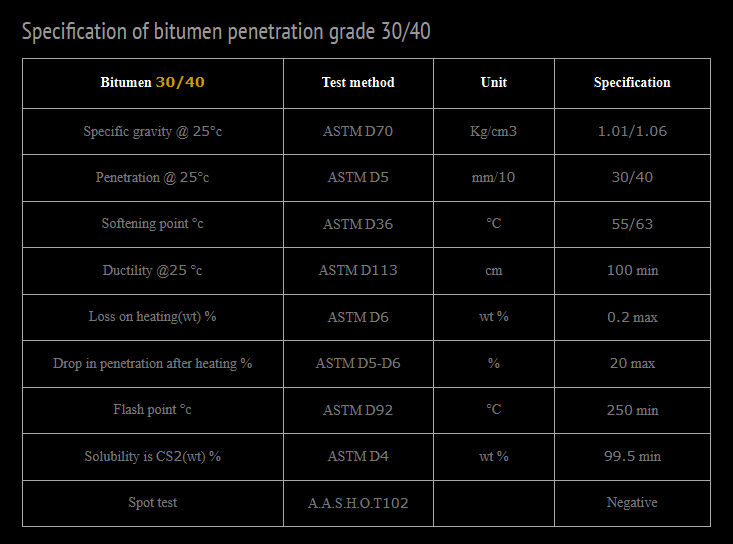

Definition of Bitumen Penetration Grade 30/40 – Iran Bitumen Supply Int │ IBSI
Bitumen Penetration Grade 30/40 is a semi‑hard penetration grade bitumen widely used in road construction, asphalt production, and infrastructure repair projects. This grade is a petroleum‑based bitumen produced through the fractional and vacuum distillation of crude oil. At Iran Bitumen Supply Int │ IBSI, our Bitumen 30/40 is manufactured from high‑quality vacuum residue (short residue) feedstock to ensure consistent performance and compliance with international standards. Penetration grade bitumens are classified based on penetration value and softening point, with the designation determined solely by the penetration range. Bitumen 30/40 exhibits thermoplastic behavior, meaning it softens at high temperatures and hardens at lower temperatures. This temperature‑viscosity relationship is essential for evaluating performance characteristics such as stiffness, adhesion, durability, and application temperature. The behavior of bitumen is highly dependent on temperature, and the stiffness‑versus‑temperature curve varies based on the crude oil source and refining method. Bitumen Penetration Grade 30/40 is known for its semi‑hard consistency, making it suitable for heavy‑traffic roads, high‑temperature climates, and durable asphalt pavement production. It is one of the most commonly used bitumen grades and serves as a base material for many other bituminous products. Penetration testing determines the hardness of bitumen by measuring the depth (in tenths of a millimeter) to which a standard needle penetrates the sample in 5 seconds at 25°C.
Applications of Bitumen Penetration Grade 30/40
Bitumen 30/40 supplied by Iran Bitumen Supply Int │ IBSI is ideal for Road construction and highway surfacing, Heavy‑duty pavements exposed to high traffic loads, Hot mix asphalt (HMA) production, Base and wearing course layers, Asphalt repair and maintenance projects. Its semi‑hard consistency provides excellent resistance to deformation, making it suitable for hot climates and high‑stress pavement structures.
Quality Assurance & Safety – Bitumen Penetration Grade 30/40
Iran Bitumen Supply Int │ IBSI guarantees the quality of Bitumen Penetration Grade 30/40 through strict quality control procedures. We work with independent international inspection companies to verify the quality and quantity of each shipment during loading. Our QC team performs batch‑wise testing before dispatch to ensure full compliance with ASTM standards. Our commitment to quality ensures that every shipment meets the performance requirements demanded by modern road construction and industrial applications.

Specification of Bitumen 30/40